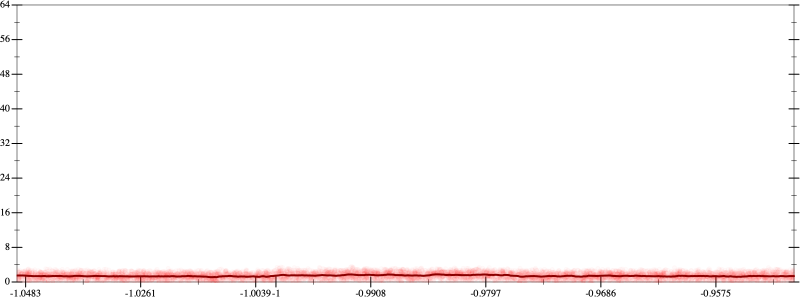
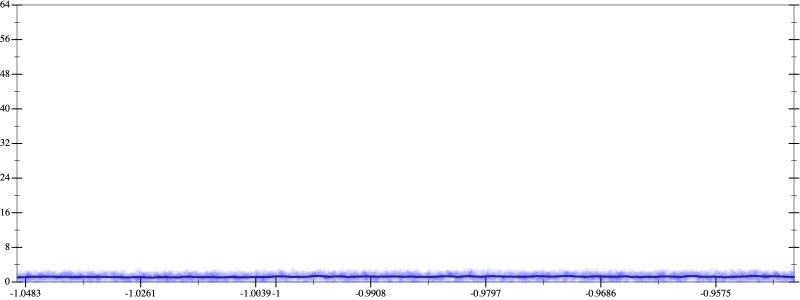
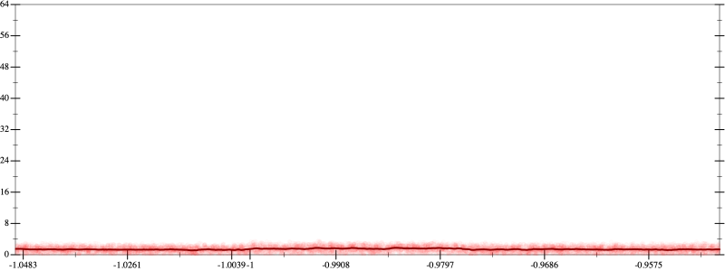
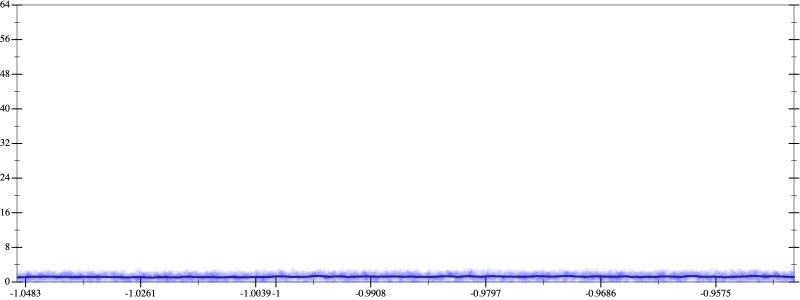

Initial program 1.4
\[\left(0.375 + -3.75 \cdot \left(x \cdot x\right)\right) + 4.375 \cdot \left(\left(\left(x \cdot x\right) \cdot x\right) \cdot x\right)\]
- Using strategy
rm Applied pow31.5
\[\leadsto \left(0.375 + -3.75 \cdot \left(x \cdot x\right)\right) + 4.375 \cdot \left(\color{blue}{{x}^{3}} \cdot x\right)\]
Applied pow-plus1.4
\[\leadsto \left(0.375 + -3.75 \cdot \left(x \cdot x\right)\right) + 4.375 \cdot \color{blue}{{x}^{\left(3 + 1\right)}}\]
- Using strategy
rm Applied add-sqr-sqrt1.4
\[\leadsto \color{blue}{\sqrt{\left(0.375 + -3.75 \cdot \left(x \cdot x\right)\right) + 4.375 \cdot {x}^{\left(3 + 1\right)}} \cdot \sqrt{\left(0.375 + -3.75 \cdot \left(x \cdot x\right)\right) + 4.375 \cdot {x}^{\left(3 + 1\right)}}}\]
- Using strategy
rm Applied add-log-exp1.4
\[\leadsto \color{blue}{\log \left(e^{\sqrt{\left(0.375 + -3.75 \cdot \left(x \cdot x\right)\right) + 4.375 \cdot {x}^{\left(3 + 1\right)}} \cdot \sqrt{\left(0.375 + -3.75 \cdot \left(x \cdot x\right)\right) + 4.375 \cdot {x}^{\left(3 + 1\right)}}}\right)}\]
Applied simplify1.2
\[\leadsto \log \color{blue}{\left({\left(e^{4.375}\right)}^{\left({x}^{\left(1 + 3\right)}\right)} \cdot \left({\left(e^{-3.75}\right)}^{\left(x \cdot x\right)} \cdot e^{0.375}\right)\right)}\]
 
